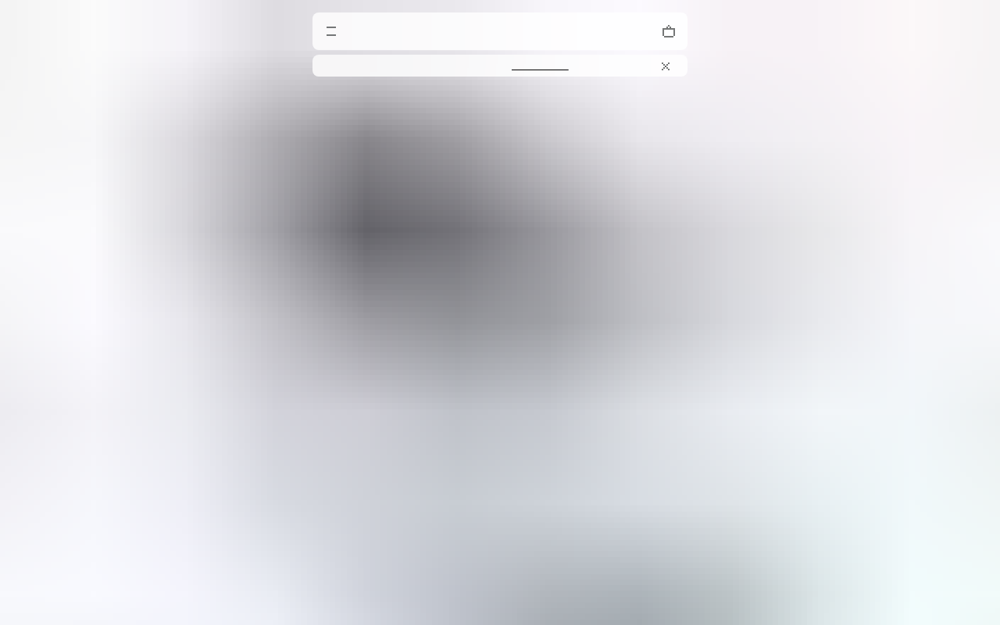

Design System Report
Nothing — NType82 · Ndot
nothing.tech가 실제로 서빙하는 CSS에서 직접 뽑은 디자인 토큰·타이포그래피·컴포넌트 스펙. 극도의 흑백 이분법 + 커스텀 도트 매트릭스 폰트가 핵심.

Quick Start
5분 안에 Nothing처럼 만들기 — 3가지만 하면 80%
1 · 폰트
body {
font-family:
"NType82-Regular",
sans-serif;
font-weight: 400;
}
2 · 다크 배경
:root {
--bg: #000000;
--fg: #FFFFFF;
}
body {
background: var(--bg);
color: var(--fg);
}
3 · 샤프 버튼
/* radius: 0 — 각진 엣지 */
.btn {
border-radius: 0;
border: 1px solid
#FFFFFF;
padding: 12px 28px;
}
절대 하지 말아야 할 것 하나: 포인트 컬러 추가. Nothing의 정체성은 순수 흑백 이분법이다. 빨강이든 파랑이든 색상을 넣는 순간 Nothing 미니멀리즘의 전부가 무너진다.
Source
nothing.tech
Next.js + Tailwind CSS
Fetched
2026.04.13
커스텀 폰트 3종
Primary Font
NType82
+ Ndot · LatteraMonoLL
Brand
#000000
흑백 이분법 — 포인트 없음
01 · Provenance
출처와 수집 기준
URL · fetch 시점 · 파싱 방식까지 CSS 번들에서 직접 뽑은 값이다.
Source URL
https://nothing.techFetched2026-04-13
FrameworkNext.js + Tailwind CSS v3
Custom FontsNType82-Regular, NType82-Headline, Ndot-Regular, LatteraMonoLL
Token prefixN/A — Tailwind utility-first, CSS 변수 없음
MethodCSS 커스텀 프로퍼티 직접 파싱 · AI 추론 없음
02 · Tech Stack
테크 스택
Nothing의 기술 스택 — 미니멀한 CSS 아키텍처.
FRAMEWORK
Next.js + Tailwind CSS v3 (utility-first)
DESIGN SYSTEM
자체 미니멀 시스템 — 디자인 토큰 없음, 폰트 3종이 시스템
FONT SYSTEM
자체 호스트
NType82-Regular, Ndot-Regular, LatteraMonoLL — Nothing 전용DEFAULT THEME
dark 기본 (
#000000 배경) ↔ 흰 섹션 교차. 포인트 컬러 없음FOCUS RING
투명 outline + tw-ring — Tailwind focus-visible 패턴
CANONICAL ANCHOR
흑백 이분법
#000000 + #FFFFFF. 어떤 포인트 컬러도 없음03 · Typography
타이포그래피
Nothing의 폰트 시스템 — 3종 커스텀 폰트가 디자인 아이덴티티의 전부.
Font Stack
Primary
NType82-Regular — 본문, UI 텍스트 (7회 사용)
Headline
NType82-Headline — 히어로, 대형 디스플레이
Dot Matrix
Ndot-Regular — 레이블, 스펙 수치 (6회, weight 100)
Mono
LatteraMonoLL — 기술 스펙, 코드 (5회)
Weight system
400 (normal) · 100 (Ndot 전용 thin)
도트 매트릭스 폰트 주의:
Ndot-Regular는 weight 100으로 사용한다. 일반 weight로 사용하면 도트 패턴이 뭉개진다. Nothing의 레이블과 스펙 수치에서 이 폰트가 브랜드 개성을 만든다.
04 · Colors
컬러
흑백 이분법 — 포인트 컬러 없음이 Nothing의 선언이다.
Dark Theme -- 기본 테마
Background#000000
Foreground#FFFFFF
Neutrals -- 보조 텍스트, 오버레이
Subtle#B1B3B3
Muted#9CA3AF
fg-80rgba(fff,.8)
overlayrgba(fff,.05)
Light bg#F4F4F4
포인트 컬러 없음: frequency 상위 23개 색상 중 chromatic 3개(#9CA3AF, #002F6C, #E5E7EB)는 모두 Tailwind 기본값이거나 보조 UI. Nothing은 브랜드 컬러를 의도적으로 배제한다.
05 · Spacing
스페이싱
Tailwind 기본 스케일 (4px 베이스).
2 (8px)8px
4 (16px)16px
6 (24px)24px
8 (32px)32px
12 (48px)48px
20 (80px)80px
32 (128px)128px
06 · Radius
라디우스
Nothing은 라디우스를 쓰지 않는다. 각진 엣지가 하드웨어 미학.
Button
0px — sharp
Card
0px — sharp
Input
0px — sharp
Pill (rare)
999px — 드문 예외
07 · Components
컴포넌트
Nothing의 핵심 UI 컴포넌트.
btn-primary
흰 배경, 검정 텍스트 (다크 배경에서)
background: #FFFFFFcolor: #000000border: 1px solid #FFFFFFborder-radius: 0padding: 12px 28px
hover: 반전 (bg #000, color #fff)
dot-label
Ndot 도트 매트릭스 레이블
PHONE (1) PRO · 50MP CAMERA
font-family: Ndot-Regularfont-weight: 100font-size: 11px–14pxletter-spacing: .08em
색상: #B1B3B3 (subtle gray)
08 · CSS · Tailwind
코드 내보내기
바로 붙여넣을 수 있는 CSS 변수와 Tailwind 설정.
/* Nothing Design System — Drop-in CSS */ :root { --color-bg: #000000; --color-fg: #FFFFFF; --color-fg-muted: rgba(255,255,255,.8); --color-subtle: #B1B3B3; --color-border: rgba(255,255,255,.15); --color-light-bg: #F4F4F4; --font-primary: "NType82-Regular", sans-serif; --font-headline: "NType82-Headline", sans-serif; --font-dot: "Ndot-Regular", sans-serif; --font-mono: "LatteraMonoLL", sans-serif; } body { font-family: var(--font-primary); font-weight: 400; background: var(--color-bg); color: var(--color-fg); -webkit-font-smoothing: antialiased; }
// tailwind.config.js module.exports = { darkMode: 'class', theme: { extend: { colors: { nothing: { black: '#000000', white: '#FFFFFF', gray: '#B1B3B3', }, }, fontFamily: { ntype: ['NType82-Regular', 'sans-serif'], headline: ['NType82-Headline', 'sans-serif'], ndot: ['Ndot-Regular', 'sans-serif'], lattera: ['LatteraMonoLL', 'sans-serif'], }, borderRadius: { DEFAULT: '0px' }, }, }, }
09 · Do / Don't
Do / Don't
Nothing 디자인 시스템을 복제할 때 가장 중요한 규칙들.
✓ DO
- 흑백 이분법 — #000000 + #FFFFFF만
- 버튼 border-radius: 0 — 각진 엣지 필수
- Ndot weight 100 — 도트 폰트는 thin으로
- 거대한 헤드라인 + 작은 바디의 극적 대비
- 검정 섹션 ↔ 흰 섹션 교차로 리듬 만들기
- 스펙은 수치로만 — "50MP" not "50 megapixel"
✗ DON'T
- 어떤 포인트 컬러도 추가 — 흑백이 전부
border-radius사용 — sharp가 Nothing- 그림자 효과 — flat, direct가 미학
- 화려한 전환 애니메이션 — 미니멀 모션
- 과도한 마케팅 카피 — 쿨하게 간결하게
- Ndot을 weight 400으로 — 반드시 weight 100
오해실제설명
레드 포인트
흑백만
UI에 레드 없음. 순수 흑백 이분법
다크 테마만
교차 사용
검정 섹션 ↔ 흰 섹션 교차가 리듬
일반 고딕 대체
Ndot 필수
도트 매트릭스 폰트가 Nothing의 시그니처